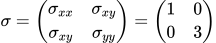
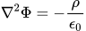
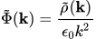
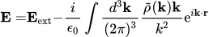
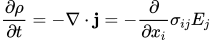

Electric Current In Poly Crystals

When an external electric field is applied to a poly crystal, a current is induced, but charge will also pile up on grain boundaries. Here, we show how GOPF can be used to calcualte the charge densities and the resulting current profile as well as the effective macroscopic conductivity. In this example, we consider a material with conductivity tensor
The induced potential Φ arising from induced charges is given by the Poisson equation
where ρ is the charge density and ε0 is the vacuum permittivity. The fourier transformed potential is therefore given by
By using the relation E = -∇ Φ, the total electric field is given by
where Eext is the external electric field. From Ohm's law ji = σijEj, and charge conservation, the final equation that needs to be solve is
 We solved the equation above in a system consisting of several grains that are rotated with respect to each other. The initial charge density was zero everywhere.

Left: Charge density. Positive and negative charges pile up on grain boundaries. Right: Current density. The electric field is applied along the horizonal axis.
The effective macroscopic conductivity can be found by averaging the current acros the simulation cell. javg = σeffEext. By carrying the averaging we find that σeff = 2.6.